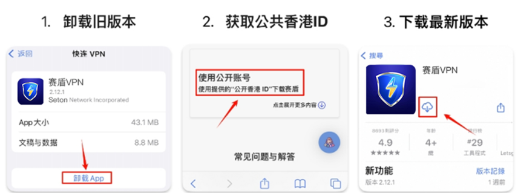
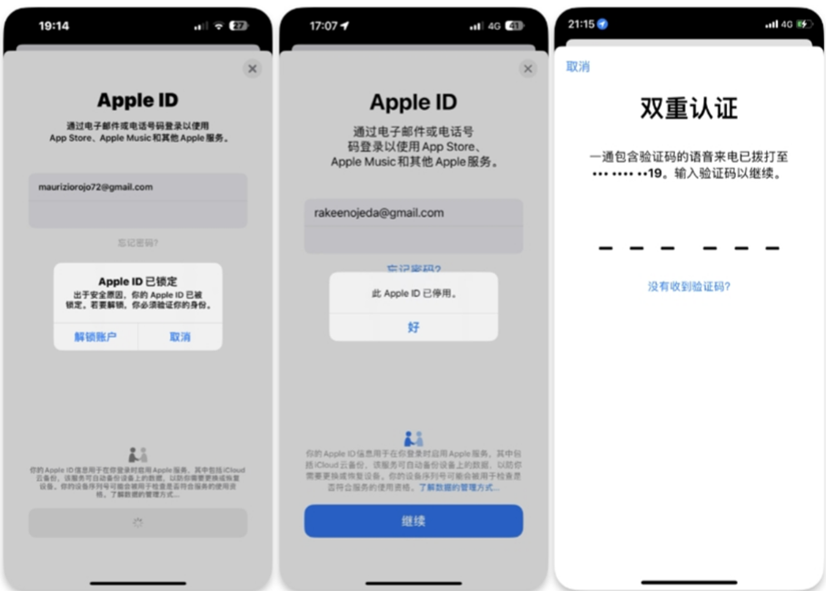
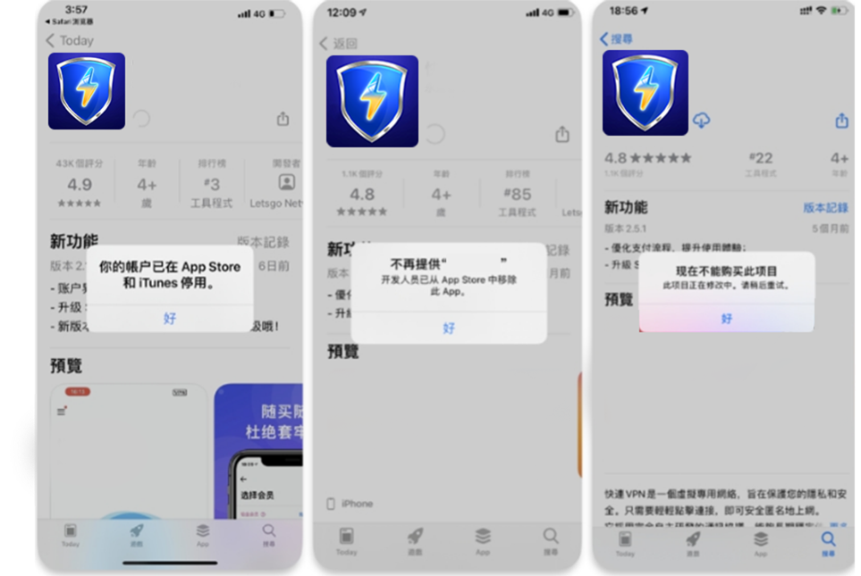

返回
欢迎查看常见问题
智慧服务，让您使用更简单

苹果版本赛盾 VPN 更新遇到问题怎么办?
如果您在更新赛盾 VPN 版本的时候遇到问题，请查看本篇文章解决
VPN 会经常被 GFW 封锁导致出现无法使用的情况，为保证咱们能时时连接，我们会定期在软件内加入新的防封杀技术，强烈建议您使用赛盾最新版本
苹果商店软件更新操作只能是同一AppleID 下载的软件，如果不是就会出现各种各样的错误(更新只要出现问题，请按照下面方式解决即可)
解决办法:

1.卸载旧版本赛盾VPN 软件 (购买时长会保留到最新下载软件中，不必担心)
2.到官网的iOS版本下载教学，获取公共香港ID教程
3.登入Appstore，搜索“赛盾VPN” or “Seton VPN”下载最新版本
常见问题:
登录公共 Apple lD 时，出现““双重验证”/'停用”/“鎖定”提示，怎么办?
这是由于有其他用户没有按照教程操作，将公共Apple ID 绑定手机号码，开启了双重验证所导致。
解决办法:请您先清除浏览器缓存，再刷新本页面，获取新的公共 ApplelD，接着请按照教程一步一步操作

下载赛盾 App 时提示出现“此项目已不再提供”!”不再提供“赛盾 VPN”怎么办?
遇到此情况可能说明您的手机中还存在赛盾VPN的<历史旧版本>，它会与 App Store 版本产生冲突。
解决办法:删除旧版本，重新安装新版本

注:若您在下载和使用过程中有任何问题，您随时可以发送邮件给 {{kfEmail}}，将由专业的客户服务人员帮助您获取到最新版本的软件。